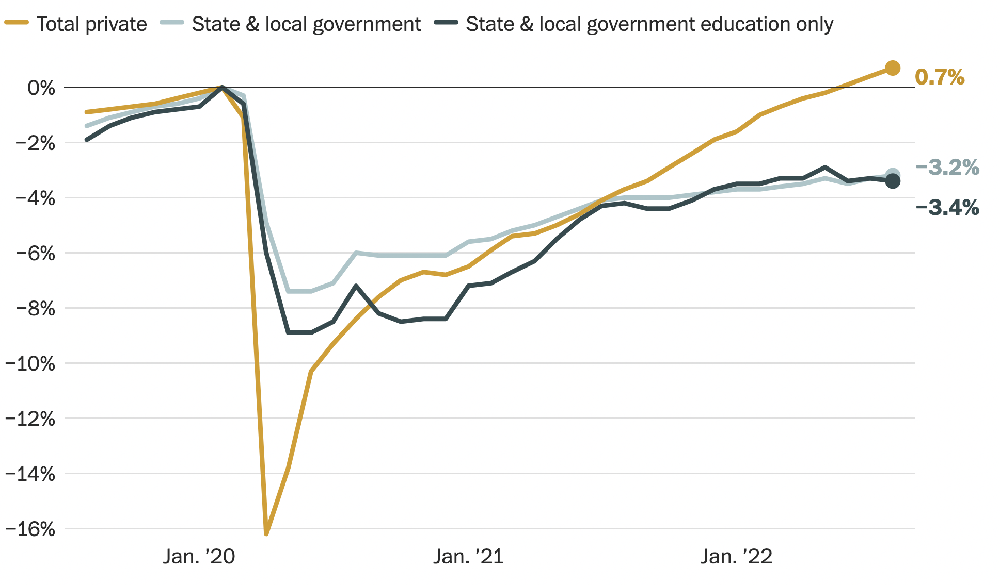
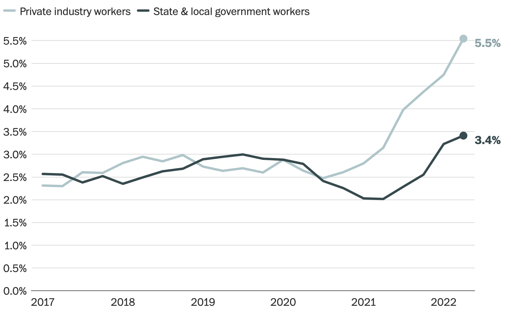

September 12, 2022 at 6:10 p.m. EDT
COLUMBIA, S.C. — A little-noticed, slow-moving crisis has been infecting states, counties and towns across the country, leaving governments unable to fulfill their most basic functions.
In Indianapolis, trash isn’t getting picked up. In Jefferson County, Colo., potholes aren’t being patched. In Franklin County, Wis., school bus routes have been canceled. In Florida, prisons are having trouble operating and have called in the National Guard for help. In Missouri, Medicaid enrollment forms are waiting months to get processed. And here in Richland County, S.C., a project to connect rural homes to a public sewer system was delayed.
The cause? A nationwide shortage of public workers.
Pandemic-era labor shortages have been well documented. But the situation for state and local governments is much worse than in the private sector. In fact, the private sector has already recovered the jobs lost early in the pandemic; there are 885,000 more jobs filled in the private industry today than in February 2020.
The public sector is a completely different story. State and local governments are down 647,000 positions on net since February 2020.

Roughly half the decline is in education, causing major disruptions as children return to school amid teacher shortages. But the other half is workers missing from virtually every other government function — paramedics, sanitation workers, child-welfare advocates, heavy-equipment operators, you name it.
This wasn’t supposed to happen. At least, not this time.
The Great Recession left states and municipalities starved of tax revenue, and it took roughly a decade for the public sector to recover the jobs lost. This resulted in worse services for taxpayers and a drag on the private economy. Wary of repeating that experience with the coronavirus, Congress appropriated hundreds of billions of dollars to state and local governments. That way, the thinking went, public-sector functions could more quickly recover.
States also had stronger own-source tax revenue this time around, partly because other federal stimulus programs boosted consumer spending.
So the question is why state and local governments, flush with cash, are still struggling to hire and retain staff.
Part of the answer is the “silver tsunami.” Baby boomers are retiring, and the public-sector workforce tends to skew older than the private-sector workforce, MissionSquare Research Institute managing director Joshua Franzel told me in an interview conducted jointly for a “PBS NewsHour” story.
The bigger challenge, though, involves pay — and governments’ unwillingness to pony up.
Many public-sector jobs already paid less than their private-sector counterparts. Today, in a tight labor market and inflationary environment, private firms are rapidly raising compensation. Government employers have been slower to adapt — partly because of legislative budget cycles or other bureaucratic hurdles, and partly because of public opposition.

“It’s on TV when the city is negotiating with the city manager to give them a 3 percent raise,” said National League of Cities CEO Clarence E. Anthony, describing a “fishbowl effect” that doesn’t exist for most private-employer wage negotiations. “People call in, saying, ‘Why do they deserve an increase? They’re public servants!’”
Governments have offered modest raises that (mostly) haven’t kept up with inflation. Meanwhile, they’ve devoted large chunks of their budget surpluses to tax cuts. As a result, the private-public pay gap is widening, and public workers are being poached.
Franzel said he’d heard of ambulance support staff being lured away to better-compensated jobs at Dunkin’. Others I interviewed described the challenges for filling less glamorous jobs.
“Do you want to come play in the poopy water?” said Bill Davis, utilities director for Richland County, while taking me on a tour of a wastewater treatment plant. “Or do you want to go make 20 percent, 25 percent more and work at Amazon?” (Amazon founder Jeff Bezos owns The Post.)
Some public-sector jobs have also become more unpleasant, stressful or unpopular in recent years, thanks to public harassment or distrust. Think: public health jobs, elections work, teaching, law enforcement. Without substantially higher pay, it has become harder to recruit for these jobs.
Staffing shortages can also beget more staffing shortages. Taking on more work to cover for persistent vacancies can burn out employees. In Richland County, emergency medical technicians and paramedics have struggled at times to take bathroom breaks because of relentless 911 calls, county Emergency Services Department Capt. Winta Adams told me. Elsewhere, corrections officers can’t leave when their shifts end because someone didn’t show up for work and jails have minimum staffing requirements.
So workers quit.
There are two major perks of government jobs that used to make them appealing despite often uncompetitive pay: job security and fewer, more reliable hours. Today, neither of those is a guarantee. There were huge layoffs, after all, early in the pandemic. And now, public employees often work overtime to cover staff shortages.
It’s tempting to dismiss problems in public services over the past year or so as fleeting, driven by temporary labor market weirdness. But if the financial and psychic rewards of these jobs continue to deteriorate, core government functions Americans take for granted might be at risk for many years to come.